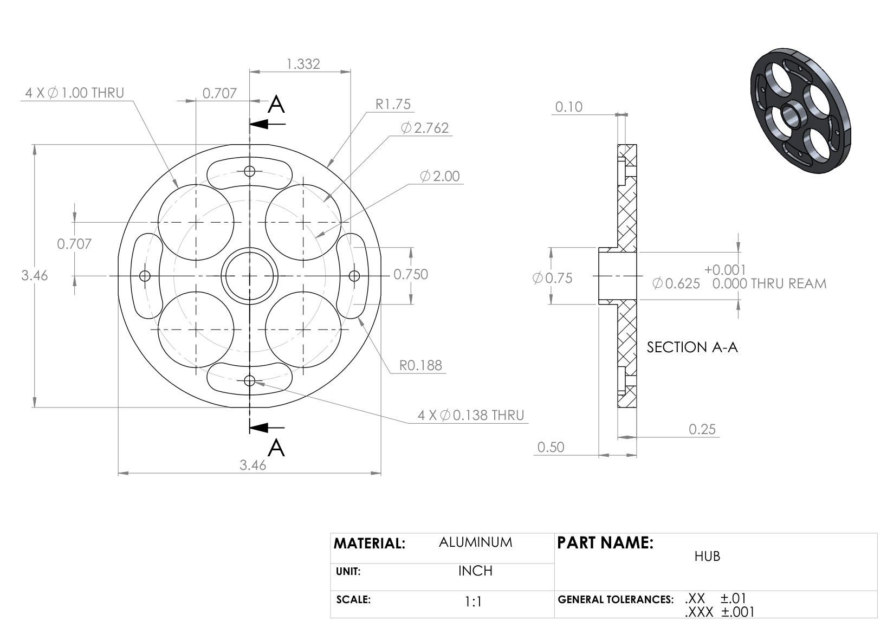
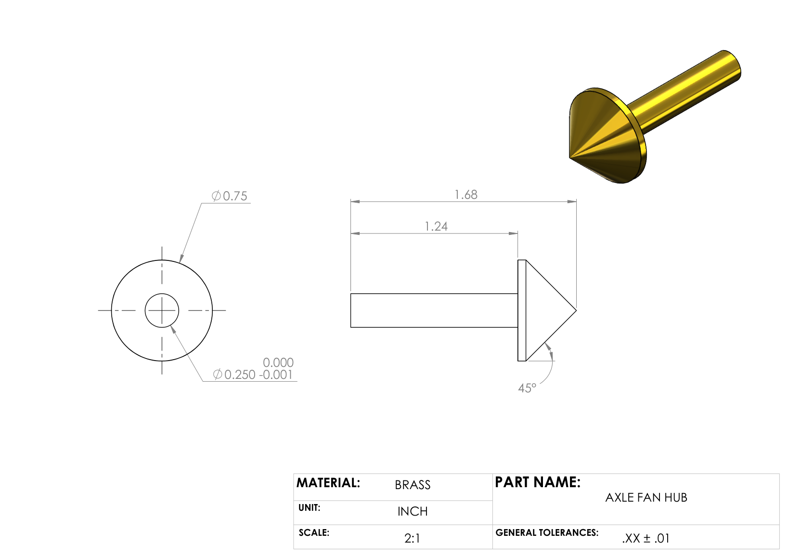
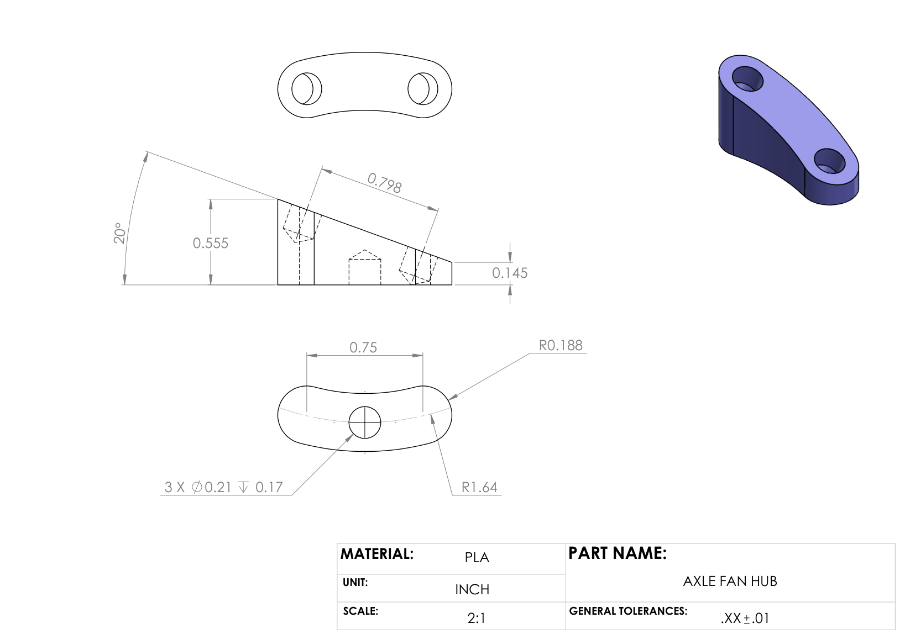
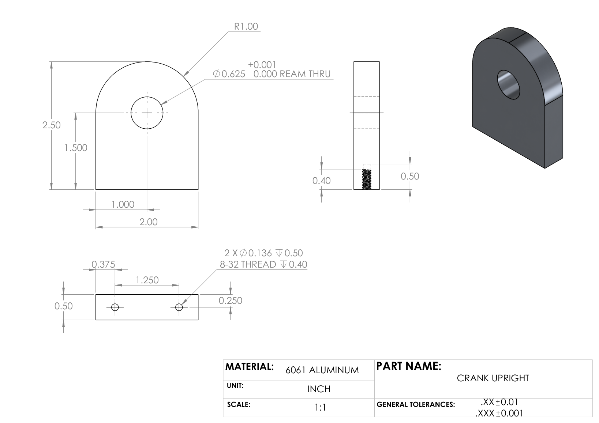

Stirling Engine: Hub Assembly
A class-built Stirling engine, with its parts split among student groups. My group, Group A, made four of them: the fan hub, its axle and inserts, and the crank upright.
- My role
- Group A: hub, hub axle, hub inserts, crank upright
- Team
- Class project, with parts divided among groups A–H
- Course
- UW ME 355 lab project
- Date
- Winter 2025
- Processes
- Manual lathe, manual mill, reaming, tapping, 3D printing
- 4parts owned by my group
- 0.001 inrequired precision on three of the four parts
- 3processes: turning, milling, 3D printing
- 0.625 inreamed bearing bores in the hub and crank upright
My role: Group A's parts
Each group was assigned a set of parts, with the stock, machine, and required precision set by the course. Group A was responsible for three precision metal parts and a set of printed inserts.
| Part | Stock | Machine | Critical feature | Hardware |
|---|---|---|---|---|
| Hub | 3.5 × 0.5 in aluminum bar | Mill and lathe | ⌀0.625 in reamed bore, +0.001/−0 in; four ⌀1.00 in through-holes | 2 flanged bearings (5/8 in) |
| Hub axle | 0.75 in brass rod | Lathe | ⌀0.250 in shaft, +0/−0.001 in, with a 45° cone end | none |
| Hub inserts (×4) | PLA filament | 3D printer | 20° angled face, ±0.01 in | 12 brass threaded inserts |
| Crank upright | 2 × 0.5 in 6061 aluminum bar | Mill | ⌀0.625 in reamed bore, +0.001/−0 in; two 8-32 tapped holes | 2 flanged bearings (5/8 in), 2 × 8-32 screws |
The course rated the hub "Hard" and the other three "Easy". The hub needs both the mill and the lathe, and its bearing bore is reamed to +0.001/−0 in.
Stock, machines, difficulty, precision, and hardware are from the course's lab-project spreadsheet; dimensions and tolerances are from the part drawings below.
Machines and processes
- Lathe: turning the brass hub axle to a ⌀0.250 in shaft held to +0/−0.001 in, with a 45° cone on its ⌀0.75 in head. The hub also needed lathe work.
- Mill: machining the hub and crank upright from aluminum bar, reaming their 0.625 in bearing bores to +0.001/−0 in, and drilling and tapping the two 8-32 holes in the crank upright.
- 3D printing: printing the four PLA hub inserts and fitting them with brass threaded inserts.
- Hardware: 5/8 in flanged bearings in the reamed bores (two each in the hub and crank upright) and two 8-32 socket-head screws for the crank upright.
Drawings
Course-provided drawings for the four parts my group made.








Skills used
- Manual lathe
- Manual mill
- Reaming to tolerance
- Drilling and tapping
- 3D printing with threaded inserts
- Reading engineering drawings
- Fits and tolerances